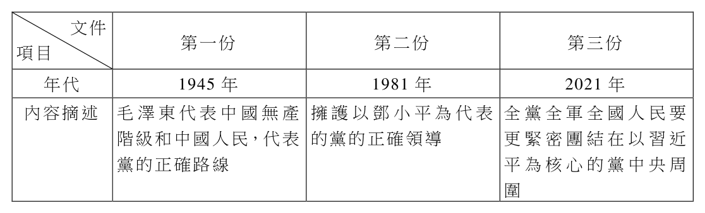

開卷有益 ／
分科測驗 ／ 公民與社會分科測驗公民與社會歷屆試題
開卷有益收錄分科測驗「公民與社會」民國 111–114 年的歷屆試題，共 4 份考卷、169 題，其中 169 題附有逐題詳解。每一份考卷都有獨立頁面，可以整卷看題目與答案，也可以直接線上作答。
線上練習 公民與社會 →
本科概況
科目 公民與社會（分科測驗） 題數 169 題 考卷份數 4 份 涵蓋年份 民國 111–114 年 詳解 169 題（100%） 資料來源 大考中心 分科測驗歷年試題（依著作權法 §9，考試試題不受著作權保護） 費用 免費，不需註冊，無廣告
社會、政治、法律、經濟四領域，重情境分析與制度比較。
歷年考卷（4 份）
點任一年度可看整份試題與標準答案。
題目長什麼樣
以下自本科題庫抽 5 題示例，完整題目請看上方各年度考卷。
第 1 題
我國各縣市政府對街頭藝人從事表演活動,各自制定相關管理辦法,規範街頭藝人若欲
在公共空間進行展演,須向縣市管理機關申請並獲許可後始得演出。上述政策作為涉及
的縣市政府職權運作,其屬性與下列哪項事例最接近?
（A） 縣市輪流承辦國慶日煙火表演活動（B） 縣市辦理轄區內立法委員選舉事宜（C） 爭取於高鐵行經路線設立縣市車站（D） 建置縣市公共自行車事故處理流程答案：（D）
詳解與考點 正解：關鍵在縣市「各自制定」街頭藝人管理辦法，並就本地公共空間的展演許可自行規劃。這是地方政府依地方生活秩序與公共服務需要行使的自治事項；（D）公共自行車的事故處理流程同樣是縣市就自身交通服務訂定規範並負責執行，兩者屬性相近，故選 D。
A：國慶日煙火屬全國性慶典，縣市即使輪流承辦，活動的主辦與整體決定仍非地方自為規範的事項。
B：立法委員選舉要求全國一致的程序與標準，縣市是依中央選務規範辦理，屬委辦性質，不能各自訂定選舉辦法。
C：爭取高鐵設站是在表達地方需求，最終決定權不在縣市政府，並非地方政府正在行使的法定職權。
本題考點：自治事項（local self-government affairs）——規範可否因地方需要而自訂、責任是否由地方承擔，是判別核心；委辦事項（delegated affairs）——全國一致性高且由中央訂定標準的事務，地方多是受託執行；地方自治（local autonomy）——政治爭取資源不等於已在行使自治權限。
阿恩的母親素來疼愛女兒,在阿恩婚前即贈與一輛名車供其上班使用。後來阿恩 與男同學小新結婚,未約定任何夫妻財產制。兩人原本都是上班族,但小新年邁的父親 出現身體失能問題,經協商後共同決定由阿恩辭職照顧小新的父親。然而,阿恩母親 卻認為她放棄工作的決定,其實是限縮女性的自我實現。
過了數月,小新遭公司資遣,經過一年仍未找到工作,於是開始抱怨社會不公, 雖然仍可以工作,但已放棄自己,家庭經濟因此陷入困境。最後因無法共同生活,小新 訴請法院判決離婚並請求分配剩餘財產,同時主張他的財產較少,請求將阿恩母親贈與 的名車分配給他。
小新放棄求職的情況,非但不是特例,反而日漸增多。有學者認為,需重新界定 失業率,加入小新這類的失業型態,才能反映真實的失業狀況。該學者蒐集近5年三筆 失業率的資料,差別在失業人數計算方式的不同,分別定義如圖3中的甲、乙、丙。請問: 12%
10%
8% 丙:「乙」再加上想要全職工作,
但只能做兼職工作的人數
6%
乙:「甲」再加上有資格且能夠工作,
4% 但目前無工作也未找工作的人數
2% 甲:目前無工作,
但隨時可以工作且正在找工作的人數
0%
2020 2021 2022 2023 2024
圖3
第 35 題
依據題文,關於小新訴請分配車輛一事,下列評論何者最符合我國民法的規定?
（A） 小新雖提出分配財產主張,但依法阿恩無須將該車分給小新（B） 因兩人未約定夫妻財產制,依法小新無法要求剩餘財產分配（C） 因該車輛屬共同財產,故依法離婚後應該由小新取得該車輛（D） 為達剩餘財產分配之目的,應該將車分配給財產較少的小新答案：（A）
詳解與考點 正解：關鍵是車輛由阿恩母親在婚前贈與，且夫妻未另訂財產制時適用法定財產制。剩餘財產差額分配並不把婚前受贈財產列入可分配的剩餘財產，因此小新雖得提出主張，不能要求分配此車。故選 A。
B：未約定夫妻財產制時，並非沒有制度可適用，而是依法適用法定財產制；符合要件時仍可能有剩餘財產差額分配請求。
C：法定財產制下，夫妻各自保有其財產的所有權，車輛不是當然的共同財產。
D：剩餘財產分配是計算可分配財產的差額，不是把特定物直接交給財產較少的一方；本案車輛又屬婚前受贈財產。
本題考點：法定財產制（statutory property regime）——夫妻未約定財產制時，先以法定財產制判斷；剩餘財產分配（distribution of remaining property）——先排除婚前財產與受贈、繼承財產，再計算可分配的差額；夫妻財產所有權（spousal property ownership）——法定財產制不是所有財產自動共有。
亞洲某小國於21 世紀初期,正式成為世界貿易組織(WTO)會員國,並依入會承諾, 開放農產品進口。該國入會前原本是稻米自給自足的國家,卻被WTO 要求開放稻米 進口,該國農業團體因而參加全球農運組織,至WTO 部長會議會場外抗議。 全球農運組織反對WTO,認為歐美等大國透過WTO 控制國際貿易並箝制小國,不但 未促進貿易或刺激經濟成長,反使各國糧食自給計畫淪為空談,更擴大國家之間和國內 的貧富差距。該組織主張,各國應依不同的發展條件與社會需要,支持國內的農民及 農產品,而且WTO 應立即解散,以杜絕富有國家繼續危害小國農民的生存權利。請問:
第 26 題
依據題文,小國農民反對WTO 最可能的原因為何?
（A） 為符合最惠國待遇原則,政府可能取消農地休耕補助（B） 加入WTO破壞糧食的自給自足,容易造成糧食短缺（C） 入會後供給增加將導致稻米價格滑落,影響農民生計（D） 為符合公平與互惠原則,政府將會提高進口肥料售價答案：（C）
詳解與考點 正解：題幹說明小國被要求開放稻米進口，直接的市場效果是國內稻米供給增加；在其他條件相近時，價格容易下滑，生產者的收入與生計便受到衝擊。（C）最能連結開放進口與農民反對的經濟誘因，故選 C。
A：最惠國待遇著重會員間不得任意差別待遇，不能直接推論政府必須取消國內農地休耕補助。
B：開放進口可能引發糧食自給的疑慮，但進口本身增加可得糧食，不能直接推成必然短缺。
D：公平與互惠原則不會當然規定進口肥料必須漲價，該敘述缺少與稻米開放的直接因果。
本題考點：供給與價格（supply and price）——供給增加而需求未同步增加時，判準是市場價格有下跌壓力；貿易自由化（trade liberalization）——開放進口會使國內生產者面對更多競爭；農民生計（farmers’ livelihood）——判斷受損機制時，要把政策連到價格、收入或生產條件的具體變化。
◎ 冷戰結束後的數十年間,跨國企業曾無需擔心地緣政治因素,在全球拓展商業。然而, 近日有學者撰文指出,全球正劃分為二個互相競爭的集團,一個由西方領導,另一個由 中國領導,跨國企業不能再忽視地緣政治。另一項調查報告則指出,跨國公司管理階層 憂心與不憂心中國及其鄰近區域政治風險的比例,已經從2021 年的2:1,提升至目前 的20:1。不少跨國公司對於依賴中國製造及銷售的情況感到不安,也認為依照中國當 前的政治特性,目前唯一可以預測的就是它的不可預測性,因而計劃將部分製造、供應 鏈和銷售轉移到更友善的國家。請問:
第 17 題
依據題文,跨國公司所指的中國當前之不可預測性,其根源最可能為下列何者?
（A） 以黨領政導致政府效率不彰（B） 立法機關缺乏專業和自主權（C） 共產主義抗拒自由市場體制（D） 權力愈趨集中於個人與專斷答案：（D）
詳解與考點 正解：材料以「唯一可以預測的就是不可預測性」描述跨國公司對中國政治風險的憂慮，並把問題連到當前政治特性；最能解釋政策可能隨個人意志急遽變動的根源，是權力日益集中於個人與專斷決策，故選D。
A：政府效率不彰可能造成行政遲滯，但不必然造成政策方向難以預期，與材料強調的政治風險不完全相同。
B：立法機關缺乏專業或自主權可反映制衡較弱，卻沒有D直接指出決策權向個人集中所帶來的專斷性。
C：材料沒有把不可預測性歸因於拒斥市場；跨國公司擔憂的是政治決策風險，而非單純的經濟制度名稱。
本題考點：威權體制（authoritarianism）——分析政治風險時，觀察權力是否集中且缺乏有效制衡；個人化統治（personalist rule）——重大決策若高度依附個人意志，外部行動者較難依穩定規則預測政策。
第 8 題
小艾蒐集中國共產黨建黨百年僅有的三份「歷史決議」,並整理出以下摘要表。此
摘要表最能夠佐證中國政治的何種特性?
文件
第一份 第二份 第三份
項目
年代 1945 年 1981 年 2021 年
內容摘述 毛澤東代表中國無產 擁護以鄧小平為代表 全黨全軍全國人民要
階級和中國人民,代表 的黨的正確領導 更緊密團結在以習近
黨的正確路線 平為核心的黨中央周
圍

（A） 長期以黨領政（B） 行政權力獨大（C） 無產階級路線（D） 禁止政黨競爭答案：（A）
詳解與考點 正解：三份歷史決議跨越不同年代，卻都以毛澤東、鄧小平或習近平為核心來表述「黨的正確領導」與全國人民應團結的方向。材料持續把政治正當性置於共產黨領導之下，最能佐證長期以黨領政，故選 A。
B：行政權力獨大必須比較行政、立法與司法等國家機關的權限，摘要沒有這類資訊。
C：無產階級路線只出現在第一份文件的表述，不能概括三份決議共同呈現的政治特性。
D：禁止政黨競爭可能是特定政治體制的制度安排，但材料沒有呈現政黨參選或競爭規則。
本題考點：黨國體制（party-state system）——材料反覆把國家與人民的政治方向繫於單一政黨領導時，可判為以黨領政；材料概括（evidence-based generalization）——找共同特性時，要選所有材料都支持的敘述，不能以單一年代的用語替代整體結論。
分科測驗其他科目
題目與標準答案出自大考中心 分科測驗歷年試題（依著作權法 §9，考試試題不受著作權保護），依《著作權法》第 9 條為非著作權標的，得自由利用；
本專案撰寫的詳解以 CC0 1.0 貢獻至公眾領域。詳解為 AI 整理的學習輔助，並非官方標準答案。